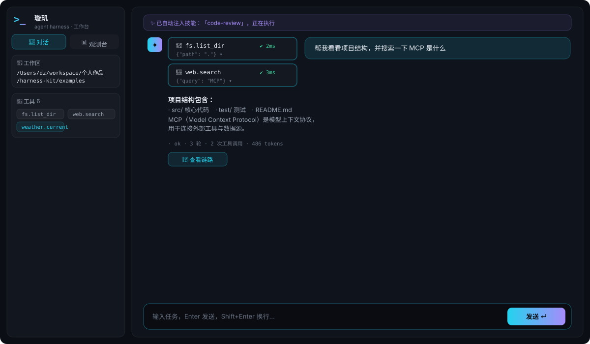
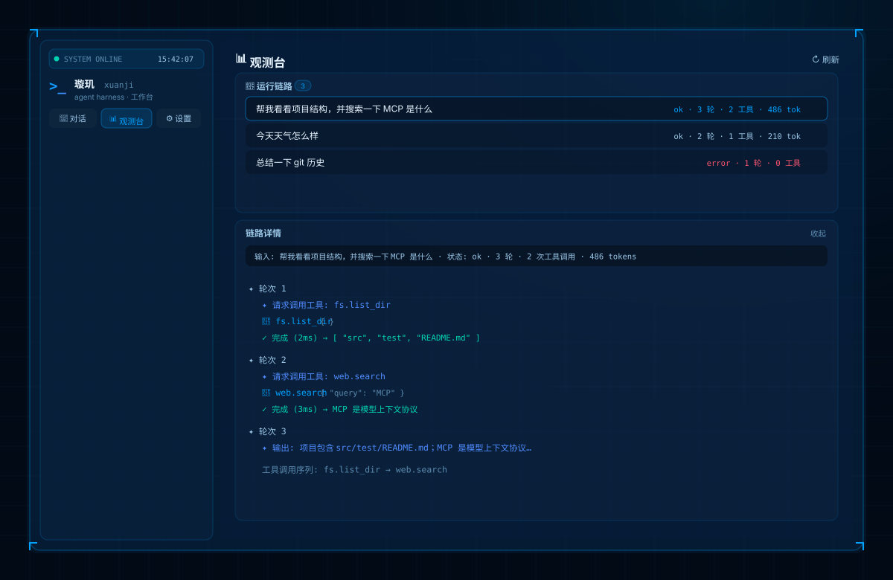
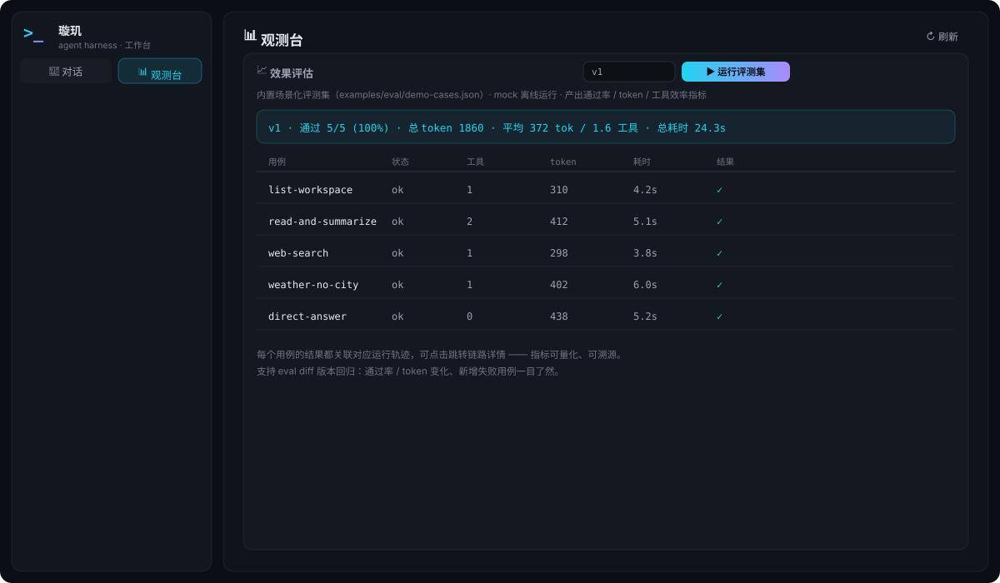
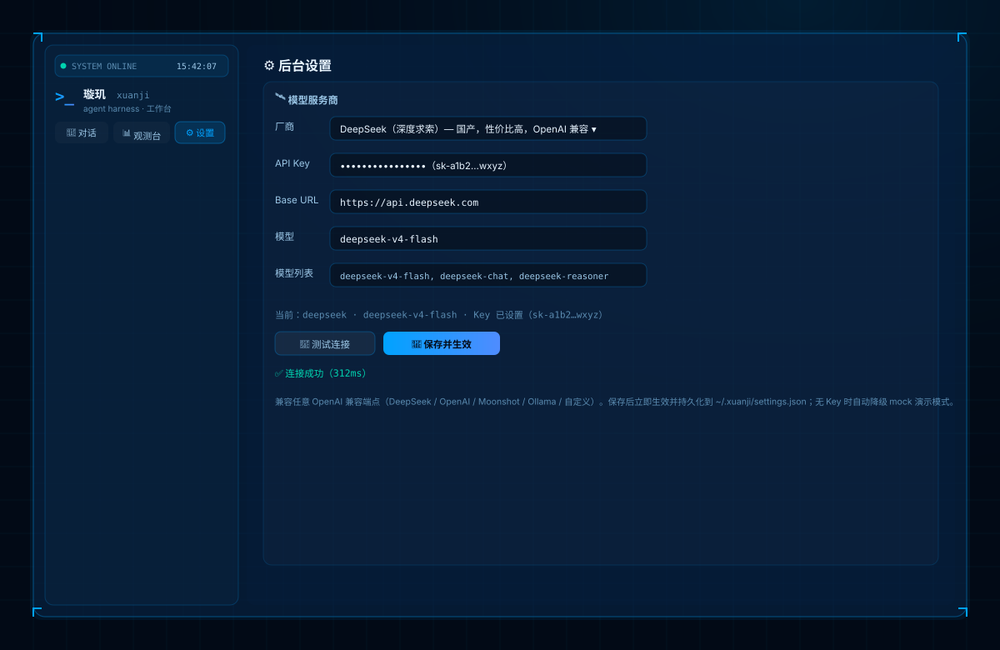

完整事件流记录为 JSONL 轨迹；离线回放校验事件顺序、复算工具序列与 token；黄金轨迹比对发现行为变化 —— agent 行为可回归验证。
超预算分层压缩（截断工具结果 → 折叠旧轮次为摘要）；不依赖 LLM、可离线测试；实测长会话 token 由 29,990 压缩至 1,240（约 96%）。
声明式规则按“工具名 + 参数”判断放行/拒绝/询问；危险命令直接拒绝，高风险操作需人工确认，无确认通道默认拒绝（fail-closed）。
成功运行的轨迹自动转成可复用的 SKILL.md 技能；多条同类轨迹按使用频率加权 —— 下次同类任务可直接复用。
场景化评测集 + 自动化评测流水线，产出通过率 / token / 工具效率指标报告，支持版本回归，指标关联轨迹可溯源。
独立观测台：历史运行列表 + 逐轮时间线（模型输出、工具参数/耗时/结果、token、压缩事件），问题可定位到具体一步。



